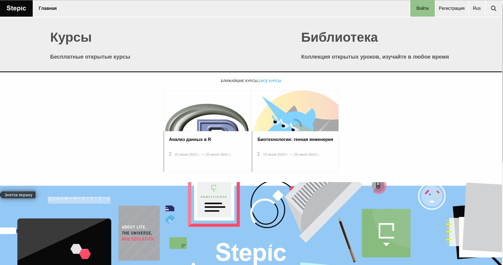
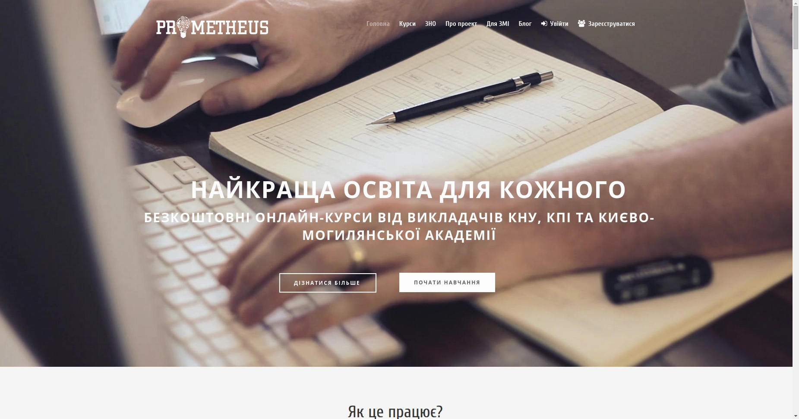
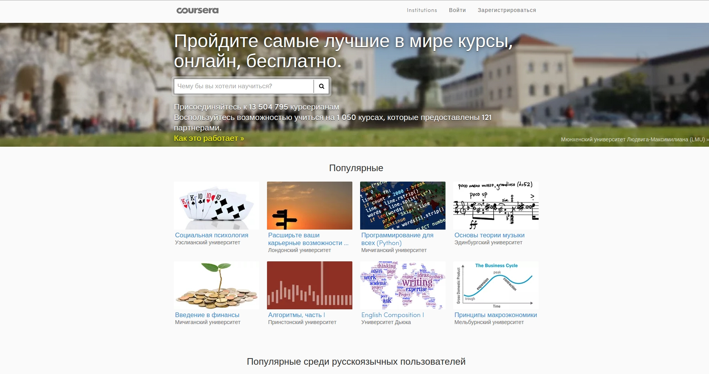
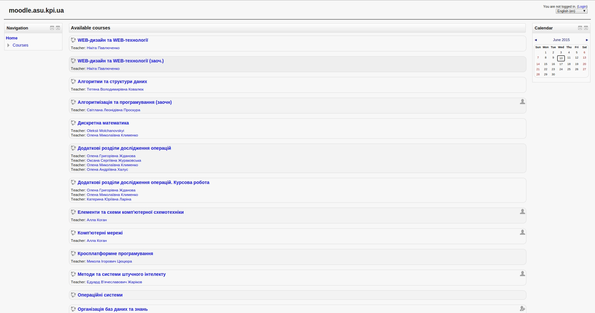
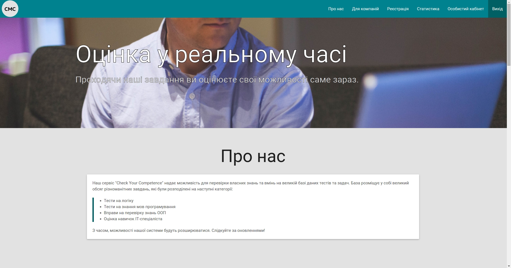
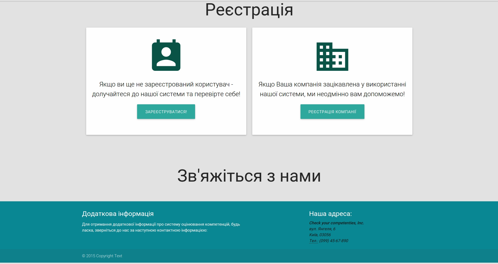

Завдання: Здійснити пошук вже існуючих проектів на дану тематику та розробити гооловну сторінку проекту з описом її будови.
Сьогодні в Інтернеті можна знайти багато ресурсів, на яких можна якимось чином протестувати свої знання з деякої галузі знань. Так як Наш проєкт орієнтований на ІТ індустрію,
нами був проведений аналіз русурсів, які надають користувачам змогу оцінити свої знання в області ІТ. Деякі з них:

Рис.1 Stepic

Рис.2 Prometheus

Рис.3 Coursera

Рис.4 Moodle
На основі цього нами було розроблено макет головної сторінки нашого проекту:

Рис.5 Головна сторінка проекту

Рис.6 панель реэстрації користувачів
Проект був розроблений на основі "матеріального дизайну" Materialize